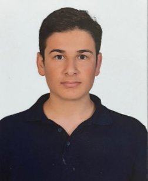

Elektrik-Elektronik Mühendisi Adayı. Gömülü sistemler, otomasyon ve 3D tasarım tutkunu. Sabırlı, adım adım ilerleyen ve çözüm odaklı bir mühendis.
Projelerimi GörDokuz Eylül Üniversitesi Elektrik-Elektronik Mühendisliği son sınıf öğrencisiyim (Şubat 2026 Mezuniyet). Mersin/Mut doğumluyum. Mühendislik eğitimim boyunca teorik bilginin yanı sıra saha uygulamalarına önem verdim.
Yatılı okul disipliniyle büyüdüm, bu bana zorluklar karşısında sabırlı olmayı ve kendi ayaklarım üzerinde durmayı öğretti. Kodlamada (C/C++) mükemmel olduğumu iddia etmem ancak bir sistemin nasıl çalışması gerektiğini analiz etme, algoritma kurma ve Autodesk Fusion 360 ile mekanik tasarımlar yapma konusunda yetkinim.
Elektrik-Elektronik Mühendisliği
2020 - 2026 (Beklenen)
Ortalama: 2.35 (Aktif Proje Odaklı Öğrenim)
Bakım Planlama Stajyeri
1 Ay
Elektrik Stajyeri
1 Ay
Bitirme projesi kapsamında; karton, pirinç kabuğu ve kahve telvesini karıştırarak ürün elde eden tam otomasyonlu bir makine tasarımı.
TÜBİTAK projesi için geliştirdiğim, makinenin tüm verilerini anlık izleyebildiğim modern bir "Command Center" masaüstü uygulaması.
TEKNOFEST yarışması kapsamında aviyonik sistem sorumluluğu. Sensör verilerinin okunması ve yer istasyonu haberleşmesi.
Projelerim hakkında konuşmak veya iş birliği yapmak için bana ulaşabilirsiniz.
© 2025 Mustafa Çelik